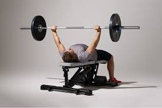

🏋️♂️ Effective Muscle-Building Workouts

Building muscle effectively relies on compound movements such as squats, deadlifts, bench press, pull-ups, and overhead press. These exercises engage multiple muscle groups and maximize growth.
Sample Routine:
- Squats: 3 sets of 8–12 reps
- Deadlifts: 3 sets of 8–12 reps
- Bench Press: 3 sets of 8–12 reps
- Pull-Ups: 3 sets to failure
Learn about Nutrition
🥗 Nutrition for Muscle Growth

A balanced diet rich in protein, complex carbohydrates, and healthy fats supports muscle repair, energy, and hormone balance.
Daily Intake Recommendations:
- Protein: 1.4–2.0 g per kg of body weight
- Carbohydrates: Whole grains, fruits, vegetables
- Fats: Avocado, nuts, olive oil
Explore Wellness Tips
🛌 Wellness & Recovery
Proper rest and recovery are essential. Aim for 7–9 hours of sleep, stay hydrated, and incorporate rest days to let muscles rebuild.
Quick Tips:
- Stay hydrated—drink at least 2–3 L of water daily
- Include stretching and mobility work
- Consider supplements like whey protein and creatine if needed